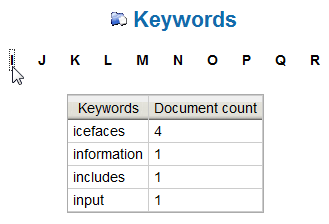

Showing keywords |
In LogicalDOC, under Searches menu you can view the tag search page. By selecting a letter, LogicalDOC displays a table with two columns: in the first column there is a list of all the tags that begin with that letter; in the second there is the number of documents associated with that tag.

By clicking on a tag, LogicalDOC shows the list of all documents that are associated with that particular tag. Finally, by clicking on icon 3.23, you can view the selected document within its folder.